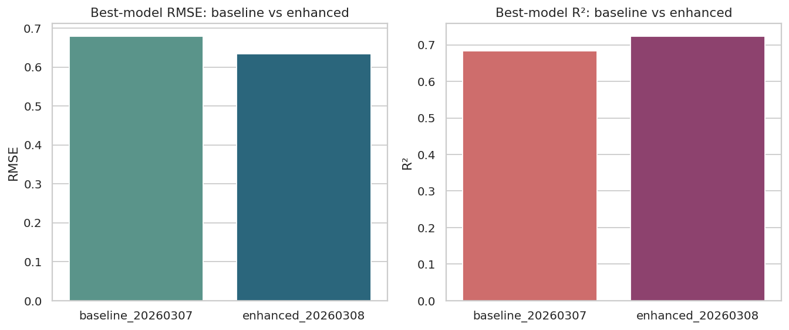
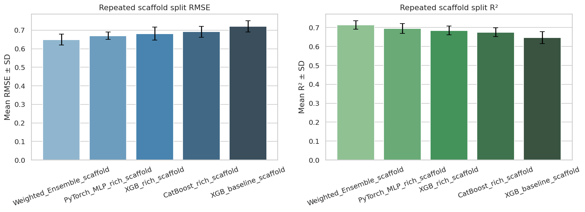
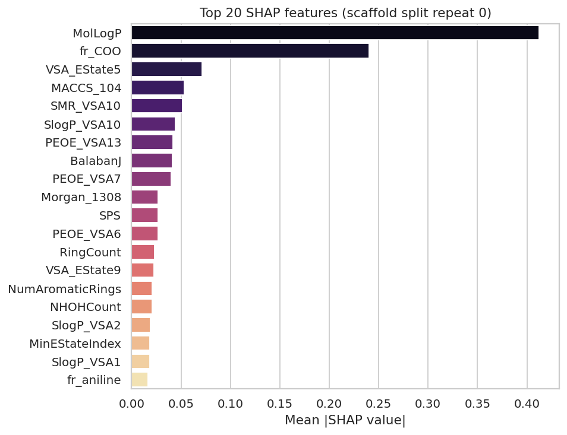
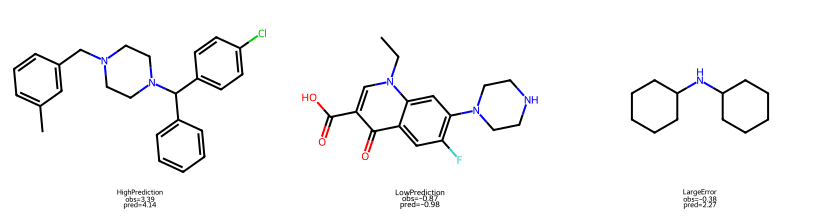

版本：2026-03-15
项目目录：/public/home/zhw/cptac/projects/experiment/qsar_project
适用对象：药学研究生复试、跨学科答辩、GitHub 项目介绍、Hugging Face 平台说明
读者假设：默认读者不同时具备药学、化学信息学和机器学习背景，因此本报告会先解释“为什么要做”，再解释“怎么做”，最后解释“结果意味着什么”。
这个项目做的事情是：
根据一个分子的结构（SMILES），用真实公开数据训练得到的模型去预测它的脂溶性，并进一步用可解释性方法说明模型为什么这么判断，最后把结果做成可以直接访问的网页和 API。
如果再口语一点，可以把它理解成：
这是一个“药物分子实验前预筛选助手”。
你给它一个分子的结构，它先告诉你这个分子大概更偏亲水还是疏水，然后再告诉你：模型主要是根据哪些结构或理化特征做出这个判断的。这样，药化人员可以更有依据地决定：
脂溶性（lipophilicity，常见表征是 logD 或 logP）是药物研发中非常关键的性质。它会影响：
可以粗略理解为：
所以在药物设计里，脂溶性经常不是“越高越好”或“越低越好”，而是要平衡。
当然，最可靠的办法始终是做实验测量。但实验存在几个现实问题：
因此，一个很自然的问题是：
能不能在实验之前，先用计算方法做一次“预筛选”？
这就是本项目的切入点。
项目的目标不是做一个“花哨的模型”，而是解决一个真实的研发决策问题：
对一个新分子，在还没做实验之前，我们能不能基于结构大致判断它的脂溶性，并给出可解释的结构层面提示？
因此，这个项目有三个层次的目标：
再往前走一步，我们还把它做成了一个小型平台，所以还有第四层目标：
这个项目可以分成 9 个步骤：
下面逐步解释。
本项目使用的是公开 Lipophilicity 数据集，来自 MoleculeNet / DeepChem 体系，对应真实药物样分子的实验脂溶性记录。
项目中已经整理的数据概况：
4200 个分子ChEMBL 编号results/dataset_summary.json这意味着：
对于药学复试来说，这一点非常关键。因为老师往往不只关心你“会不会调模型”，还关心你：
项目先对原始数据做了这些处理：
SMILES 是否能被 RDKit 正确解析；可以理解为：
在开始训练模型之前，先把“分子结构数据”变成干净、统一、可计算的输入。
一个分子的 SMILES 是字符串，不能直接喂给机器学习模型。
所以我们必须把分子结构转成数字特征。这个过程叫 特征工程。
本项目使用了三类特征。
这类特征偏“药学常识”，代表分子的整体性质，例如：
MolWt：分子量MolLogP：疏水性/脂溶性相关指标TPSA：拓扑极性表面积HBD/HBA：氢键供体/受体数RingCount：环数QED：类药性评分这类特征好处是：
除了基础描述符之外，项目进一步计算了更全面的 2D 描述符，然后在训练集内做筛选：
最后保留了 173 个有效描述符。
这一步的意义是：
这类特征更像“结构片段编码”。
可以把它们粗略理解成：
描述符更像“分子的整体体检报告”，
指纹更像“分子有哪些局部结构片段的编码表”。
因为脂溶性这个性质不是由单一因素决定的。
它既和：
有关，也和：
有关。
所以本项目选择：
基础描述符 + 扩展描述符 + 结构指纹
来共同表达分子。
我们没有一上来就堆复杂方法，而是先做了几类基线模型：
这样做的好处是：
在增强版里，项目引入了：
这里的思路不是“哪个模型最炫就用哪个”，而是：
最终最佳模型是：
Weighted_Ensemble_rich它本质上不是重新训练了一个更复杂的“大一统模型”，而是：
也就是说：
我们不是盲目追求“单个模型必须赢”，而是利用不同模型之间的互补性。
这是一种很典型、也很成熟的工程与科研思路。
增强版最终结果如下（来自 results/final_results_v2.md）：
| 模型 | R² | RMSE | MAE |
|---|---|---|---|
| Weighted_Ensemble_rich | 0.7232 | 0.6346 | 0.4517 |
| XGB_rich_desc_fp_maccs | 0.7043 | 0.6559 | 0.4810 |
| CatBoost_rich_desc_fp_maccs | 0.6973 | 0.6637 | 0.4862 |
| PyTorch_MLP_rich_desc_fp_maccs | 0.6967 | 0.6643 | 0.4634 |
| XGB_baseline_desc_fp | 0.6835 | 0.6787 | 0.5075 |
从结果上看：
上一版最佳是：
XGB_desc_fpR² = 0.6835RMSE = 0.6787增强版最佳是：
Weighted_Ensemble_richR² = 0.7232RMSE = 0.6346也就是：
R² 提升了 0.0397RMSE 降低了 0.0440这说明增强并不是“做了很多事但没效果”，而是带来了明确收益。
如果只做普通随机划分，老师可能会问：
这些分子是不是在训练集和测试集里其实很像，所以模型看起来很厉害？
这个问题非常关键。因为在真实药物研发里，模型常常面对的是：
scaffold 可以理解为分子的“骨架框架”。
如果训练集和测试集共享大量相似骨架，那么模型在测试集上的表现可能会偏乐观。
所以项目进一步加入了：
也就是说：
来自 results/scaffold_validation_results.md：
| 模型 | R² mean ± std | RMSE mean ± std | MAE mean ± std |
|---|---|---|---|
| Weighted_Ensemble_scaffold | 0.7138 ± 0.0215 | 0.6489 ± 0.0296 | 0.4962 ± 0.0226 |
| PyTorch_MLP_rich_scaffold | 0.6945 ± 0.0261 | 0.6698 ± 0.0200 | 0.5111 ± 0.0187 |
| XGB_rich_scaffold | 0.6847 ± 0.0234 | 0.6811 ± 0.0347 | 0.5241 ± 0.0252 |
| CatBoost_rich_scaffold | 0.6750 ± 0.0234 | 0.6914 ± 0.0295 | 0.5313 ± 0.0201 |
| XGB_baseline_scaffold | 0.6472 ± 0.0311 | 0.7200 ± 0.0299 | 0.5519 ± 0.0234 |
这组结果通常会比随机划分更低，这是正常的。因为验证变严格了。
真正重要的是：
这会让老师觉得你不是只会“做一个漂亮分数”，而是知道：
科研里要证明模型真的能泛化。
很多模型预测项目只停留在：
但这在答辩里很容易被追问：
所以项目加了 SHAP（SHapley Additive exPlanations），这就是一类典型的 XAI（可解释人工智能） 方法。
说明整个模型最重视哪些特征。
项目中排名靠前的特征包括：
MolLogPfr_COOVSA_EState5MACCS_104SMR_VSA10这很有意义，因为：
MolLogP 和脂溶性本身高度相关；说明对某一个具体分子，哪些特征在把预测值往上推，哪些在往下拉。
项目还专门挑了 3 个案例：
HighPredictionLowPredictionLargeError这样就能回答：
为什么这个分子会被预测成高脂溶性？
为什么另一个分子会被预测成低脂溶性？
为什么有的分子模型会判断失误？
SHAP 不能证明因果，但它能证明：
你可以把它理解成：
SHAP 让这个项目从“黑盒预测器”升级成“可解释的药化辅助工具”。
很多课程项目只到“代码能跑”和“图画出来”为止。
但这个项目进一步做成了：
用户可以：
SMILES因为这说明你不仅会：
你还会：
对计算机老师来说，这体现工程能力。
对药学老师来说，这意味着项目更接近“真的能用”的科研工具。
Gemini 不是这个项目的核心预测模型，而是一个辅助解释层。
它的作用不是替代现有模型，而是把已有结果翻译得更适合人读。
因为如果让 Gemini 直接“猜脂溶性”，那就失去了严格建模和可验证性。
而现在的做法是：
先用真实训练得到的模型做预测，
再用 Gemini 做语言层的辅助解释。
这样既保留了科研严谨性，又增强了可读性和展示性。
这个项目最终不是一个单文件脚本，而是一整套成果。
包括但不限于：
这意味着它已经具备：
你可以这样理解：
这是一个帮药物研发做前期判断的小工具。
它根据分子结构估计脂溶性，从而帮助判断这个分子是不是值得继续推进。
这是一个真实数据驱动的、带严格验证和可解释性的分子性质预测系统。
它包含了：
这是一个可以输入分子、得到预测结果和解释，并能通过 API 被其他系统调用的在线工具。
答辩里通常会遇到这些问题，而这个项目都能回答。
因为脂溶性是药物研发中的关键性质，和吸收、分布、膜通透性直接相关，药学意义明确。
因为它是真实公开数据，不是模拟数据，有清晰来源，适合复现和对外展示。
因为不同模型对同一问题的优势不同，做比较和集成可以更稳、更有说服力。
因为做了：
因为加入了 SHAP：
不是。Gemini 只做辅助解释，不做核心数值预测。
不是不能做，而是当前这套方案已经在真实数据上取得稳定且可解释的结果，并且更容易复现、部署和展示。对于复试来说，这样更稳。
经得住拷问的项目，不是说“没有缺点”，而是说：
你知道自己的边界在哪里。
本项目目前还有这些局限：
这些局限并不减分，反而会让你的答辩显得成熟。
如果后续还要继续增强，这几个方向最有价值：
这个项目最终形成的是一个完整的跨学科作品，而不是单一模型实验。
它把下面几件事串起来了：
如果要用一句最适合答辩的话来总结它，可以说：
这是一个从真实公开数据出发、经过结构增强建模、严格验证和可解释性分析，最终做成在线平台的可解释药物脂溶性预测项目。它不仅能预测一个分子的脂溶性，还能解释为什么这么判断，并把结果进一步转化成适合药学理解和展示的结构优化提示。
Weighted_Ensemble_richR² = 0.7232RMSE = 0.6346MAE = 0.4517Weighted_Ensemble_scaffoldR² = 0.7138 ± 0.0215RMSE = 0.6489 ± 0.0296MAE = 0.4962 ± 0.0226MolLogPfr_COOVSA_EState5MACCS_104SMR_VSA10如果需要做 PPT 或 GitHub 首页，最推荐优先展示这几张：
../figures/14_baseline_vs_enhanced.png../figures/16_scaffold_repeat_summary.png../figures/19_shap_top20_bar.png../figures/22_shap_case_molecules.png下面是对应示意：




答：不是单纯追求一个更高的分数，而是把真实公开数据、结构增强建模、严格验证、SHAP 解释和在线平台结合起来，使它既有科研严谨性，也有展示和应用价值。
答：因为不仅有全局重要特征，还有对单个分子的局部 SHAP 解释，可以知道哪些特征在把预测往上推、哪些在往下拉。
答：不是。Gemini 不负责做核心预测，只负责把已经得到的模型结果翻译成更自然的药学和项目说明，所以它是解释层，不是核心科学结论来源。
答：因为平台化说明这个项目不是停留在离线脚本层面，而是已经具备“别人可以直接访问和调用”的工具属性，这对计算机和交叉项目尤其重要。